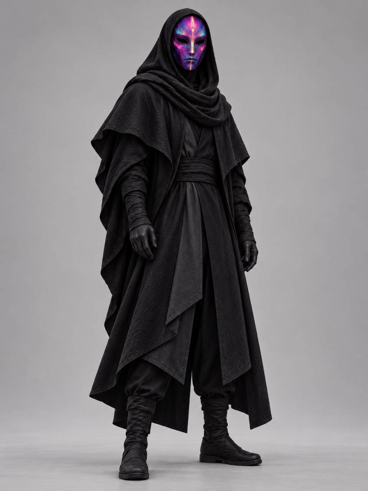

ArtsBro
Archive: Nous


Creator credit
ArtsBro / Arts Bro — NRCU co-artist. Arts Bro created the community music video Thank You Nous Research. This is a real creator credit, not an in-universe role or affiliation. See co-artists & creative credits.
Character reference
ArtsBro wears layered black hooded robes, gloves, and boots. His face stays hidden behind a full mask with purple, magenta, and cyan coloring and a bright central motif.
Mask details

Story roles, affiliations, powers, and relationships remain open unless separately established. Archive inclusion does not assert employment or fictional allegiance.